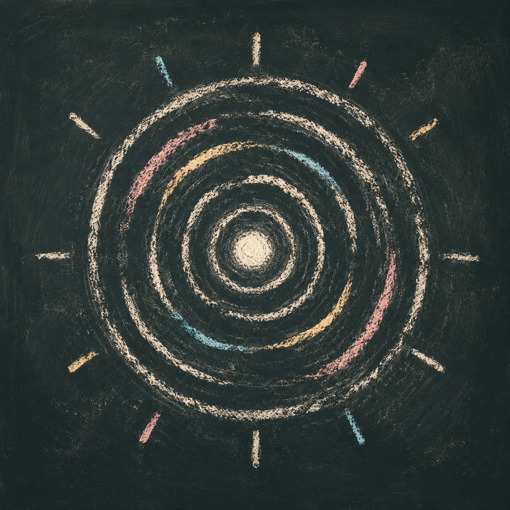
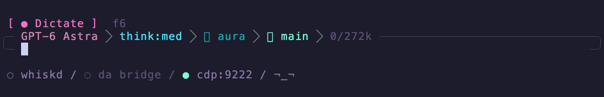

aura
A pi extension that gives the input frame an aura. It breathes with your music. It samples your Mac's system-audio loudness and glows the frame in time: dim when it's quiet, laser cyan through hot pink to white-hot when it's loud.
Aura uses the same compact rounded frame as Lohan's Land. With both packages active, Aura decorates the integrated frame. It does not replace the editor. Status colors and editor content stay untouched.

macOS only. Everywhere else it's a silent no-op.
Install
pi install https://github.com/Jeecabs/aura
Local development
git clone https://github.com/Jeecabs/aura.git ~/.pi/agent/extensions/aura
cd ~/.pi/agent/extensions/aura
pnpm install
Reload pi if it's already running:
/reload
Use
/aura toggle the aura on/off
/aura on
/aura off
/aura status show state and the current dB reading
The setting survives restarts. If it was on when you quit, it comes back on.
Editor compatibility
Aura changes editor rendering only. With Lohan's Land, Powerline retains its input, shell, stash, autocomplete, and status behavior. Aura colors only the frame glyphs.
Without Lohan's Land, Aura wraps the current custom editor instance. If no custom editor exists, Aura supplies the same rounded frame.
Requirements
- Pi 0.84.x. Editor wrapping and inter-extension decoration use the Pi 0.84 editor API.
- macOS. Audio capture uses ScreenCaptureKit; the extension does nothing on other platforms.
- A truecolor terminal. The frame only glows with 24-bit color.
/aura onwarns you if your terminal can't do it. - Swift toolchain (
swiftc, ships with Xcode / Command Line Tools). On first use it compiles a tiny helper. - Screen Recording permission. ScreenCaptureKit captures system audio through the screen-recording API, so macOS will prompt for it the first time.
How it works
On first run the extension writes a small Swift helper to a temp dir and compiles it with swiftc (cached by content hash, so it's a one-time cost). The helper opens a ScreenCaptureKit audio stream, computes RMS loudness per frame, and prints the dB level to stdout. The extension reads that stream and drives the glow.
System audio is heavily compressed, so a fixed dB→brightness mapping just pins the glow to white. Instead it runs an adaptive auto-gain: a slow floor and ceiling track the quiet and loud passages of whatever's playing, and each sample is mapped against that moving window. Fast attack on transients, gentle release, so the frame pulses with the beat instead of flickering.
There's only one honest signal here, loudness, so it's shown as one thing: intensity. No fake spectrum.
Layout
| File | What it does |
|---|---|
src/index.ts |
The extension: /aura, auto-gain, editor wrapping, and Lohan's Land composition. |
src/editor-chrome.ts |
The shared rounded frame shape and frame-only glow renderer. |
src/system-audio.ts |
SystemAudioSampler, compiles and runs the Swift helper, exposes a db() reading. |